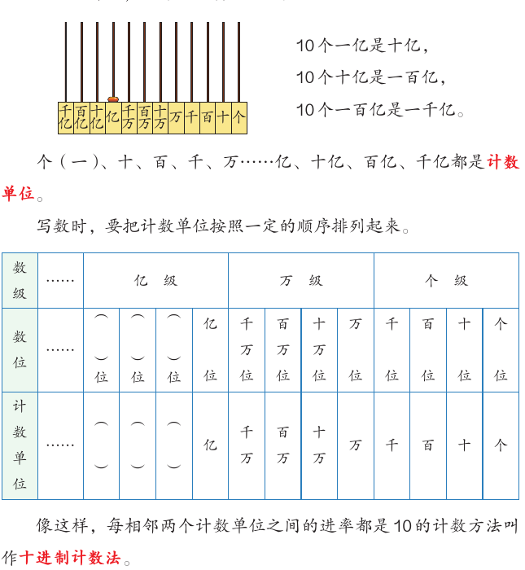
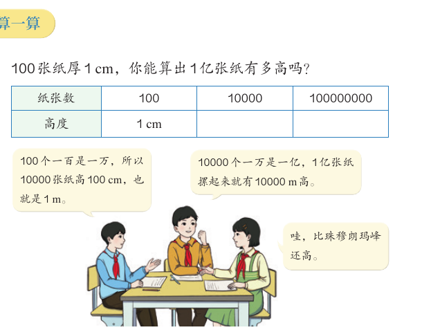

亿以上数、比大小与近似数
全国总人口是 1443497378 人。这个数比一亿还大。这一课，你会学读、写亿以上的数，学比较大数的大小。你还会学把大数说成“大约多少万”“大约多少亿”。最后动手算一算：1 亿到底有多大。
学完本课，你能够：
01比亿大的计数单位
先说结论：从一亿开始，还可以继续数下去。10 个一亿是十亿，10 个十亿是一百亿，10 个一百亿是一千亿。
教材举了两个比亿大的数：
- 现代科学研究表明，人一生心跳 25 亿～30 亿次。
- 第七次全国人口普查结果：全国总人口为 1443497378 人。

个（一）、十、百、千、万……亿、十亿、百亿、千亿都是计数单位。教材第 10 页
表示多少个一。
表示多少个万。
表示多少个亿。排法和个级、万级一样。
像这样，每相邻两个计数单位之间的进率都是 10 的计数方法叫作十进制计数法。教材第 10 页
02亿以上数的读法和写法
先说结论：亿以上的数也要先分级，再从最高级读起。读完亿级加“亿”字，读完万级加“万”字。写数时，先写亿级，再写万级，最后写个级。
- 先分级，再从最高级读起。
- 读完亿级或万级的数，要加“亿”字或“万”字。
- 还要注意什么位置上的 0 不读，什么位置上的 0 要读，读几个零。
0 的读法和 L01 一样。每级末尾的 0 都不读。其他数位上有一个 0 或连续几个 0，都只读一个零。教材第 11 页的例子：
| 数 | 分级 | 读作 |
|---|---|---|
| 8000000000 | 80 0000 0000 | 八十亿 |
| 10040002000 | 100 4000 2000 | 一百亿四千万二千 |
| 400305000000 | 4003 0500 0000 | 四千零三亿零五百万 |
读法按教材第 4 页和第 11 页的规则由程序生成。数据来自教材第 10–12 页。
写法
回忆一下亿以内数的写法：先分级，哪个数位上一个也没有，就写 0。亿以上的数也这样写。教材第 12 页的例子：
| 读法 | 亿级 | 万级 | 个级 | 写作 |
|---|---|---|---|---|
| 三亿 | 3 | 0000 | 0000 | 300000000 |
| 三十亿九千万一千五百 | 30 | 9000 | 1500 | 3090001500 |
| 七千零三亿零二十万 | 7003 | 0020 | 0000 | 700300200000 |
03数的大小比较
先说结论：比较大数，方法和万以内的数一样。位数多的数就大；位数相同，从最高位比起。
教材第 15 页给出 2024 年全国主要农产品的产量（单位：t）：
| 稻谷 | 小麦 | 玉米 | 大豆 |
|---|---|---|---|
| 207534900 | 140099400 | 294916900 | 20647800 |
位数相同的两个数，从最高位比起，最高位上的数大的那个数就大，如果最高位上的数相同，就比较下一个数位上的数。教材第 15 页
数据来自教材第 15 页和练习三第 1 题。
04改写和求近似数
先说结论：整万、整亿的数，可以改写成用“万”“亿”作单位的数，用“=”连接。不是整万、整亿的数，可以用“四舍五入”法求近似数，用“≈”连接。
改写：大小不变，写法变短
教材第 16 页说：为了读、写方便，有时会改写整万或整亿的数，用“万”或“亿”作单位。一小滴血液大约含有红细胞 25000000 个 = 2500 万个，白细胞 30000 个 = 3 万个。
| 原数 | 先分级 | 改写 |
|---|---|---|
| 25000000 | 2500 0000 | 2500 万 |
| 200000000 | 2 0000 0000 | 2 亿 |
| 1000000000 | 10 0000 0000 | 10 亿 |
| 530500000000 | 5305 0000 0000 | 5305 亿 |
求近似数：四舍五入
张阿姨这个月走了 182068 步，她说“大约 18 万步”。省略万位后面的尾数，尾数是 2068。尾数的最高位是千位，千位上是 2，小于 5，所以把尾数舍去：182068 ≈ 18 万。
李阿姨走了 218309 步。千位上是 8，大于 5，所以向前一位进 1，再把尾数舍去：218309 ≈ 22 万。
这种求近似数的方法叫“四舍五入”法。是“舍”还是“入”，要看省略的尾数部分的最高位上的数是小于 5 还是大于或等于 5。教材第 17 页
数轴只画出两个相邻的整万（整亿）之间的一段，用来解释四舍五入的道理。教材用的是“看尾数最高位”的方法。
题目来自教材第 17 页“做一做”和练习三第 3 题。人口数据是第七次人口普查的部分地区。
05准确数、近似数和合理的数
先说结论：有的数和实际数量完全一样，是准确数；有的数只是接近实际数量，是近似数。读到一个数，要想一想它是不是合理。
练习三第 2 题让我们分辨：
| 句子 | 是准确数还是近似数 |
|---|---|
| 小明身高约 140 cm，体重约 35 kg。 | 近似数（有“约”字） |
| 四（2）班有 45 人，全校有 730 人。 | 准确数 |
| 珠穆朗玛峰海拔为 8800 多米。 | 近似数（“多”说明不是正好） |
| 城市志愿者参与服务约 200000 人次。 | 近似数 |
练习二第 8 题问：下面哪些说法不合理？“我们学校有十万人。”“我今天卖了两千多万根冰棍。”“我们学校图书馆有八万册藏书。”一所学校不会有十万人，一个人一天也卖不了两千多万根冰棍。这两句不合理。
最大和最小
练习三第 6 题问：最大的九位数是多少？最小的十位数呢？最大的九位数是 999999999，最小的十位数是 1000000000。它们只相差 1。
- 数的认识：计数单位、数位、数级、十进制计数法。
- 数的读、写：先分级，再从高位起按级读、写。
- 数的大小比较。
- 数的改写：用“=”连接。
- 求近似数：四舍五入，用“≈”连接。
061 亿有多大
先说结论：1 亿太大了，没法直接数。可以先量一小份，再用计数单位之间的关系推到 1 亿。
参观印刷厂时，小丽估计一摞纸有 1 亿张。怎样知道她估计得对不对？教材的办法是：先量出 100 张纸的厚度，大约是 1 cm。

- 100 个一百是一万，所以 10000 张纸高 100 cm，也就是 1 m。
- 10000 个一万是一亿，所以 1 亿张纸摞起来就有 10000 m 高。
- 比珠穆朗玛峰（8800 多米）还高。
纸：100 张约 1 cm，1 亿张约 10000 m（教材第 25 页）。大米：教材只给出“1 亿粒大米大约重 2 t”。中间各行由课程作者按 2 t 倒推，标“推算”。写字：1 亿个字要 1 亿秒，教材说“一刻不停，3 年多才能写完”；1 年按 365 天算是补充。
07自测与速记
速记表
| 要点 | 一句话 |
|---|---|
| 亿级 | 亿、十亿、百亿、千亿；相邻计数单位进率都是 10，叫十进制计数法 |
| 读、写 | 先分级，从最高级起按级读、写；读完亿级、万级加“亿”“万” |
| 比大小 | 位数多的数就大；位数相同，从最高位起依次比较 |
| 改写 | 末尾 4 个 0 改为“万”，末尾 8 个 0 改为“亿”，用“=” |
| 近似数 | 四舍五入：看尾数最高位，小于 5 舍，大于或等于 5 入，用“≈” |
| 1 亿有多大 | 先测一小份，再推到 1 亿：1 亿张纸约 10000 m 高 |
相关课程
教材：人教版《数学》四年级上册第一单元第 10–23 页，综合与实践“1 亿有多大”第 24–27 页。标为“补充”“推算”的内容和模拟演示是课程作者的解释。